Meteocons Flat conditions · Material Symbols Rounded utilities · Roboto · RGB565-checked palette






background#020817on_background#F7F8FFprimary#9CB5FFon_primary#071738primary_container#315F9Con_primary_container#F5F8FFsecondary_container#102545on_secondary_container#D7E4FFtertiary#FFD44Fon_tertiary#2A2200surface_low#0B1C36surface#0D2342surface_high#164A7Don_surface#F7F8FFon_surface_variant#AEBFE2outline_variant#31527Eerror#FFB4ABon_error#370001error_container#8C1D18on_error_container#FFDAD6disabled#66738Dfresh#7FD88Bstale#FFD166offline#AEBFE2rain#78ADFFsnow#EEF3FFnight#AAB8FFcloud#F0F4FFcloud_shadow#B8C7E6lightning#FFD44Fmicro · 10px62° Partly cloudylabel · 14px62° Partly cloudyrow · 18px62° Partly cloudymetric · 28px62° Partly cloudyheadline · 32px62° Partly cloudyhero · 68px62° Partly cloudy